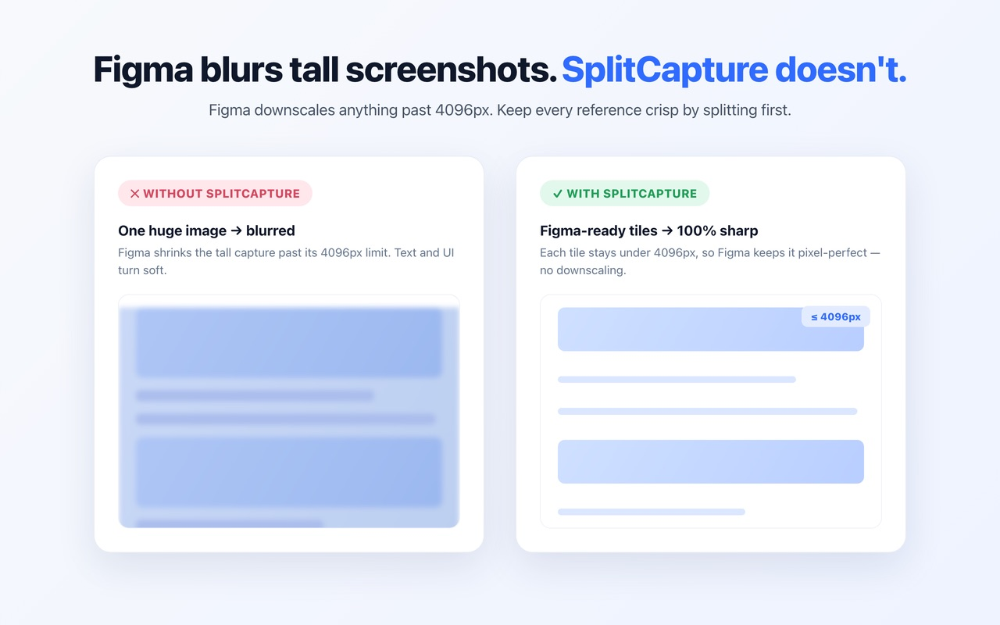
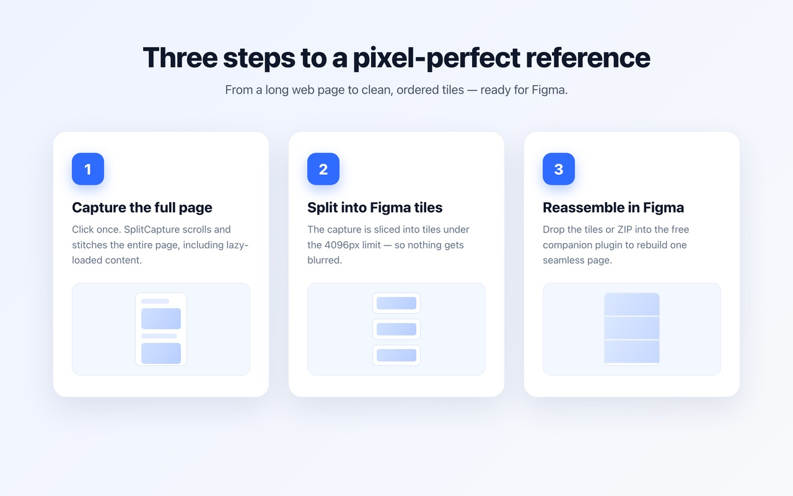
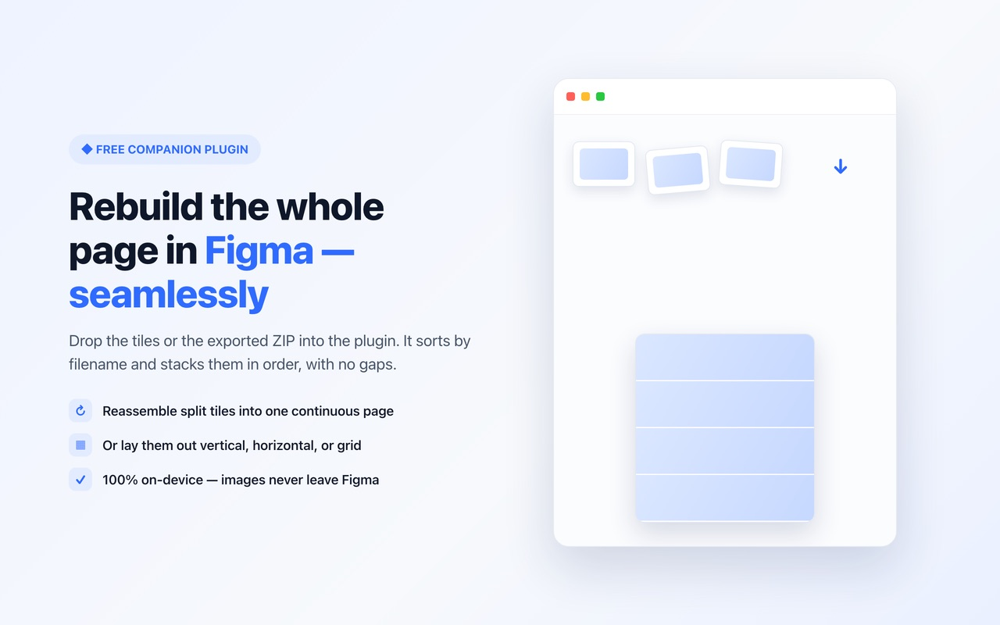

Why Figma screenshots get blurry — and how to keep full-page screenshots sharp
In short: Figma downscales any image larger than 4096px on a side, so a tall full-page screenshot turns blurry the moment you import it. The fix is to split the page into tiles of 4096px or less with the SplitCapture Chrome extension, then rebuild them into one seamless image with the free SplitCapture Figma plugin.
Why screenshots get blurry in Figma
Screenshots get blurry because Figma's maximum image size is 4096 × 4096px, and anything larger is scaled down on import. A typical landing page captured at 2x pixel density is easily 10,000–20,000px tall. To fit a 12,000px-tall capture into 4096px, Figma shrinks it to about one third of its size — small text becomes unreadable and thin lines disappear.
The image looks fine in your browser or image viewer; the loss happens only inside Figma, which is why it is easy to miss until you zoom in.

How to put a full-page screenshot into Figma without blur (3 steps)
Capture the page as tiles, drop them into the free plugin, and the plugin rebuilds one sharp page. It takes about a minute and costs nothing.

1. Capture the page with “Split image” on
Open the page in Chrome, click the SplitCapture icon, keep Split image turned on and click Capture Page. SplitCapture scrolls the whole page — including lazy-loaded content — and saves it as tiles of 4096px or less (4000px by default), downloaded together as a ZIP.
2. Open the free Figma plugin and drop the tiles
In Figma, run SplitCapture: Screenshot Arranger and drag the ZIP (or the PNG tiles) into it. You don't need to unzip anything.
3. The plugin rebuilds the page as one image
The plugin sorts the tiles by filename and stacks them in order with no gaps, grouped as one full-length page. Because each tile is 4096px or less, Figma keeps it at full resolution — the rebuilt page is as sharp as the original.

How the splitting works
SplitCapture cuts the full-page capture into horizontal tiles that are each 4096px or less, so Figma never has a reason to downscale them.
- Tile height: 4000px by default. Pro users can set any height up to 4096px.
- No seams: tiles are cut at exact pixel boundaries with no overlap by default, so stacking them reproduces the original page without duplicated or missing rows.
- Full resolution: tiles keep the original pixels. The only exception is a capture wider than 4096px (for example a large monitor at 2x), which is scaled down proportionally so it can still be placed in Figma.
- Ordered filenames: tiles are numbered, so the plugin knows the correct order.
- 100% local: capturing and splitting happen in your browser. Nothing is uploaded.
SplitCapture vs. other ways to get long screenshots into Figma
Pasting a tall screenshot straight into Figma is the fastest way, but it is the one that blurs. Slicing it by hand keeps it sharp but takes several minutes per page. SplitCapture with the plugin keeps it sharp in two clicks.
| Method | Sharp in Figma? | Effort |
|---|---|---|
| Paste a full-page screenshot directly | No — downscaled when taller than 4096px | Low |
| Generic full-page extension + slicing in an image editor | Yes, if every slice is 4096px or less | High — crop, export and align by hand |
| Drop the tiles into Figma without the plugin | Yes | Medium — tiles land scattered and need lining up |
| SplitCapture + free Figma plugin | Yes — every tile is 4096px or less | Low — capture, drop the ZIP, done |
Free version and Pro
SplitCapture is free to use, with 3 split captures per day. Pro is a one-time payment of USD 5 — no subscription — with a 14-day full refund.
| Feature | Free | Pro (USD 5, one-time) |
|---|---|---|
| Full-page capture (no split) | Unlimited | Unlimited |
| Split capture for Figma | 3 per day | Unlimited |
| Component (element) capture | Unlimited | Unlimited |
| Custom split height and overlap | — | ✓ |
| Figma plugin | Free | Free |
The daily count resets at midnight in your local time and is used only when a split capture succeeds.
FAQ
Why do my screenshots look blurry in Figma?
Figma supports images up to 4096px on each side. When you import a larger image, such as a full-page screenshot that is 10,000px tall, Figma scales it down to fit 4096px, so text and UI details turn soft. Keeping every image at 4096px or less avoids the downscaling.
What is the maximum image size in Figma?
4096 × 4096 pixels. Images larger than that on either side are downscaled when they are imported.
Do I need the Figma plugin?
No, but it saves the manual work. You can drop the tiles into Figma yourself, but they land scattered and you have to line them up by hand. The free SplitCapture: Screenshot Arranger plugin rebuilds them into one page, in order and with no gaps, in one step.
Is SplitCapture free?
Yes. The free version includes unlimited full-page captures, unlimited component captures and 3 split captures per day. SplitCapture Pro is a one-time payment of USD 5 (no subscription) that unlocks unlimited split captures and a custom split height and overlap. Pro comes with a 14-day full refund. The Figma plugin is free.
Are my screenshots uploaded anywhere?
No. The Chrome extension captures and splits pages entirely in your browser, and the Figma plugin has no network access. Your screenshots never leave your computer and Figma.
What happens if the page is wider than 4096px?
With Split image on, SplitCapture scales the whole capture down proportionally so that every tile fits within 4096px and can still be placed in Figma. This only happens on very wide captures, such as a large monitor at 2x pixel density. In all other cases the tiles are saved at full resolution.
Get started
Install the Chrome extension to capture and split, and the free Figma plugin to rebuild the page as one image.
Questions? Email info@big-aro.com.